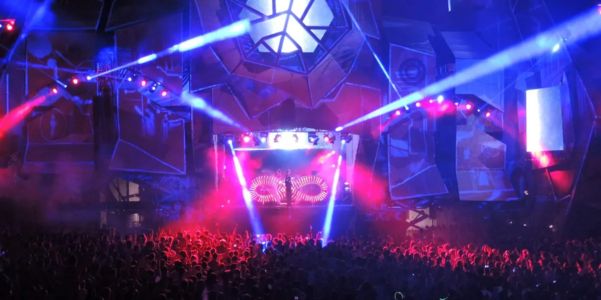
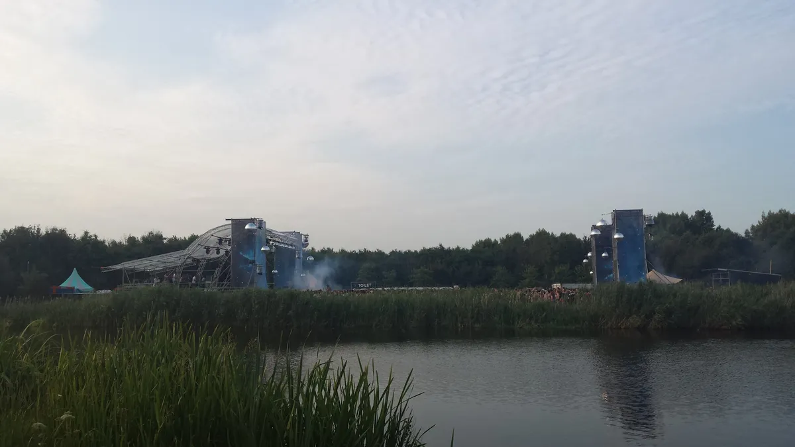

Festival guide, 2027
The best drum and bass festivals in 2027
The main drum and bass festivals compared by size, setting and sound, from a Belgian lakeside to the Croatian coast, with the 2027 dates that are confirmed and the ones that are not.
A list meant for choosing.
The drum and bass festival calendar has two peaks: the first week of July, when Rampage Open Air takes over a Belgian lakeside, and early August, when Let It Roll fills a lakeside site in the Czech Republic. Around them sit the Croatian coast, a Dutch lake and smaller festivals from Malta to Bali. This page compares the best drum and bass festivals, or dnb festivals, for 2027 by size, setting and sound, and shows which dates are confirmed.
How this list was chosen.
A festival is on this list when these three things are true:
- Drum and bass is the core of the programme.
- It has run recently, and it has either published a 2027 edition or given no sign of stopping.
- It adds something the others lack: a different size, a different country or a different way of spending the days.
A date from the festival's own site is shown as confirmed. A date found only on a listing or ticketing site is marked as listed, and should be treated as provisional until the festival publishes it.
Drum and bass festival dates for 2027 at a glance.
Rampage Open Air and Hospitality on the Beach overlap in the first days of July, and Liquicity and Outlook Origins overlap from 23 to 25 July, so in each pair you have to choose. Let It Roll in early August clashes with neither.
| Festival | Where | 2027 dates | Setting | Scale | Best for |
|---|---|---|---|---|---|
| DnB Allstars Thailand | Phuket, Thailand | Listed 22 to 24 January | Island | Three days | A winter trip |
| Rampage Weekend | Antwerp, Belgium | 5 and 6 March | Indoor arena | Two days | An early start |
| WAH Malta | Malta | Listed 29 April to 2 May | Several venues | Four days | A spring island break |
| Beyond Mars | South Gloucestershire, England | Listed 3 to 7 June | Countryside | Five days | Drum and bass in England |
| LOCUS Bali | Tabanan, Bali | Listed 17 to 20 June | Creative park | Four days | A long-haul holiday |
| Hospitality on the Beach | Tisno, Croatia | Listed 30 June to 5 July | Coast | Six days | The Hospital Records roster |
| Rampage Open Air | Lommel, Belgium | 1 to 4 July | Lake and beach | 66,000 visitors in 2025 | The biggest crowd |
| Outlook Origins | Tisno, Croatia | 22 to 26 July | Coast | Five days | A week by the sea |
| Liquicity | Geestmerambacht, Netherlands | 23 to 25 July | Lake | Three days | Liquid drum and bass |
| Let It Roll | Most, Czech Republic | 5 to 7 August | Lakeside site | More than 25,000 people | A big summer weekend |
| Sun and Bass | San Teodoro, Sardinia | Not announced (5 to 12 September in 2026) | Beach town | A week | The end of summer |
What is the biggest drum and bass festival?
Rampage Open Air reported 66,000 visitors in 2025, a record for the festival, and expected about 55,000 in 2026. Let It Roll describes itself as the biggest drum and bass festival in the world and says it draws more than 25,000 people a year. Both figures come from the organisers, and the two may not be counted the same way.
Rampage Open Air, Belgium
Rampage Open Air is held at the Kristalpark in Lommel, in the Belgian province of Limburg, a lake and beach site near the Dutch border. The 2027 edition is on 1 to 4 July. Its organisers also run Rampage Weekend, the indoor edition, at the AFAS Dome in Antwerp on 5 and 6 March 2027.
This is Eskei83 at Rampage Open Air in 2026, from the DJ's own channel.
Let It Roll, Czech Republic
Let It Roll is held at Jezero Most, a lake near the town of Most, in the north-west of the Czech Republic. The 2027 edition is on 5 to 7 August, for ages 18 and over. It is the one to choose for a big drum and bass weekend at the height of summer.

Where are the best drum and bass festivals in Europe?
Outside the two big names, the strongest choices are on the Croatian coast and in the Netherlands, with Sardinia at the end of the summer. For the music itself, and how it grew out of jungle, see the drum and bass guide.
Liquicity, Netherlands
Liquicity is built around liquid drum and bass, the melodic end of the sound, and its festival is held at Geestmerambacht, a recreation area at Oudkarspel in North Holland. The 2027 edition is on 23 to 25 July, for ages 18 and over. It is the gentlest sound on this list.

Outlook Origins, Croatia
Outlook Origins is held in Tisno, on the Croatian coast, and books drum and bass alongside the rest of UK soundsystem music. The 2027 edition is on 22 to 26 July, with boat parties on the Adriatic.
Hospitality on the Beach, Croatia
Hospitality on the Beach is the beach festival of Hospital Records, also in Tisno. It is listed for 30 June to 5 July 2027. If you follow the Hospital roster, this is the one built around it.
Sun and Bass, Sardinia
Sun and Bass has run since 2004 in San Teodoro, on the north-east coast of Sardinia, and it spreads over a week in early September. The 2026 edition was on 5 to 12 September, and the 2027 dates have not been announced. It is the late-summer choice.
Are there drum and bass festivals in England?
Beyond Mars is a festival built around drum and bass. It is listed for 3 to 7 June 2027 in the South Gloucestershire countryside, with drum and bass and other heavy electronic music. For UK festivals with drum and bass stages inside a wider programme, see the best dance music festivals in the UK.
Which drum and bass festivals are further afield?
Three festivals take drum and bass to warmer places, and each suits a holiday more than a weekend.
WAH Malta
WAH Malta is listed for Thursday 29 April to Sunday 2 May 2027 across several venues on the island, with Sub Focus announced as its first headliner.
LOCUS Bali
LOCUS Bali is held at Nuanu Creative City in Tabanan, on the south-west coast of Bali, listed for 17 to 20 June 2027, for ages 18 and over.
DnB Allstars Thailand
DnB Allstars, the UK promoter, takes a three-day event to Azulea in Phuket, listed for 22 to 24 January 2027, for ages 20 and over. It is the earliest date on this list.
Not on this list, and why.
These are festivals people ask about that fall outside the tests above.
- Hospitality in the Park. Hospital Records' London park festival has not announced a 2027 edition. The label's beach festival, above, is the one with a 2027 date.
- Boomtown. It has drum and bass stages, but drum and bass is one part of a much wider festival.
How to choose.
Pick the size you want first. For the biggest crowd, choose Rampage Open Air or Let It Roll. For a week by the sea, choose Outlook Origins or Hospitality on the Beach. For the liquid end of the sound, choose Liquicity. For the end of the summer, choose Sun and Bass.
Then look at the calendar. Rampage Open Air and Let It Roll are a month apart, so you can do both in one year.
Check dates with the festival before you book travel, because the listed dates above are provisional until the organiser publishes them.
Drum and bass festivals FAQ.
What is the best drum and bass festival?
Rampage Open Air in Belgium and Let It Roll in the Czech Republic are the two biggest, on 1 to 4 July and 5 to 7 August 2027. Liquicity in the Netherlands is the pick for liquid drum and bass, and Outlook Origins in Croatia for a week by the sea.
Where is Let It Roll held?
At Jezero Most, a lake near the town of Most in the Czech Republic. The 2027 edition is on 5 to 7 August, for ages 18 and over.
Are there drum and bass festivals in the UK?
Beyond Mars in South Gloucestershire is listed for 3 to 7 June 2027. Most UK drum and bass at festivals is on stages inside wider events, and Hospital Records' Hospitality in the Park has not announced a 2027 edition.
When is Rampage Open Air 2027?
Rampage Open Air 2027 is on 1 to 4 July in Lommel, Belgium. The indoor Rampage Weekend is at the AFAS Dome in Antwerp on 5 and 6 March 2027.
Sources.
- 2027 dates from each festival's own site: Rampage Open Air, Rampage Weekend, Let It Roll, Liquicity, Outlook Origins.
- Listed dates: Technoairlines on Hospitality on the Beach, Technoairlines on Beyond Mars, Skiddle on WAH Malta, Megatix on DnB Allstars Thailand, TicketFairy on LOCUS Bali.
- Past editions: Sun and Bass.
- WAH Malta's first headliner: Skiddle.
- Rampage attendance: VRT on 2025 and VRT on 2026.
Continue reading
Read next.
 Digging~12 min read
Digging~12 min readBest Boiler Room Sets of All Time, Ranked and Measured
Eighteen sets picked for what happens in them, beside the ten most-watched, counted across 8,206 Boiler Room recordings.
Read article →Best Clubs in Bristol: Motion, Lakota and Thekla
Motion lost its lease in 2025 and moved, Lakota has run drum and bass since the 1990s, and a 1959 cargo ship still hosts club nights: the best clubs in Bristol.
Read article → Festivals~9 min read
Festivals~9 min readTomorrowland Festival: Where It Is, How Big, and the Music
A park in Boom, Belgium, that most of the world knows through a livestream: where Tomorrowland happens, how big it is, who owns it, and what plays off the Mainstage.
Read article → Festivals~11 min read
Festivals~11 min readEDC Las Vegas: What It Is, How Big, and the Music
Electric Daisy Carnival at the Las Vegas Motor Speedway: where EDC happens, how half a million people a year grew out of a field in Chino, and what plays past kineticFIELD.
Read article →